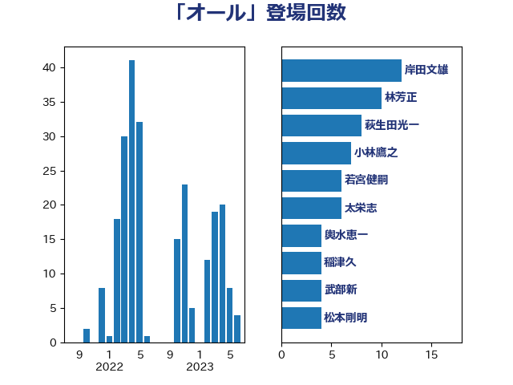

単語「オール」

| 岸田文雄 | 自由民主党 | 12 回 |
| 林芳正 | 自由民主党 | 10 回 |
| 萩生田光一 | 自由民主党 | 8 回 |
| 小林鷹之 | 自由民主党 | 7 回 |
| 若宮健嗣 | 自由民主党 | 6 回 |
| 太栄志 | 立憲民主党 | 6 回 |
| 輿水恵一 | 公明党 | 4 回 |
| 稲津久 | 公明党 | 4 回 |
| 武部新 | 自由民主党 | 4 回 |
| 松本剛明 | 自由民主党 | 4 回 |
| 岡田直樹 | 自由民主党 | 4 回 |
| 勝目康 | 自由民主党 | 4 回 |
| 三浦信祐 | 公明党 | 4 回 |
| 神谷裕 | 立憲民主党 | 3 回 |
| 大野泰正 | 自由民主党 | 3 回 |
| 中村裕之 | 自由民主党 | 3 回 |
| 下条みつ | 立憲民主党 | 3 回 |
| 高橋光男 | 公明党 | 2 回 |
| 長友慎治 | 国民民主党 | 2 回 |
| 野村哲郎 | 自由民主党 | 2 回 |
| 野中厚 | 自由民主党 | 2 回 |
| 谷川とむ | 自由民主党 | 2 回 |
| 藤巻健太 | 日本維新の会 | 2 回 |
| 秋葉賢也 | 自由民主党 | 2 回 |
| 源馬謙太郎 | 立憲民主党 | 2 回 |
| 浜田靖一 | 自由民主党 | 2 回 |
| 浅田均 | 日本維新の会 | 2 回 |
| 森本真治 | 立憲民主党 | 2 回 |
| 早坂敦 | 日本維新の会 | 2 回 |
| 志位和夫 | 日本共産党 | 2 回 |
| 平沼正二郎 | 自由民主党 | 2 回 |
| 山本啓介 | 自由民主党 | 2 回 |
| 小沼巧 | 立憲民主党 | 2 回 |
| 和田有一朗 | 日本維新の会 | 2 回 |
| 古川俊治 | 自由民主党 | 2 回 |
| 勝俣孝明 | 自由民主党 | 2 回 |
| 加田裕之 | 自由民主党 | 2 回 |
| 中野洋昌 | 公明党 | 2 回 |
| 須藤元気 | 無所属 | 1 回 |
| 長浜博行 | 無所属 | 1 回 |
| 金子道仁 | 日本維新の会 | 1 回 |
| 重徳和彦 | 立憲民主党 | 1 回 |
| 西銘恒三郎 | 自由民主党 | 1 回 |
| 西野太亮 | 自由民主党 | 1 回 |
| 西村明宏 | 自由民主党 | 1 回 |
| 舩後靖彦 | れいわ新選組 | 1 回 |
| 緑川貴士 | 立憲民主党 | 1 回 |
| 簗和生 | 自由民主党 | 1 回 |
| 竹内真二 | 公明党 | 1 回 |
| 福島伸享 | 無所属 | 1 回 |
| 石川博崇 | 公明党 | 1 回 |
| 田村まみ | 国民民主党 | 1 回 |
| 田名部匡代 | 立憲民主党 | 1 回 |
| 田中健 | 国民民主党 | 1 回 |
| 滝沢求 | 自由民主党 | 1 回 |
| 渡辺創 | 立憲民主党 | 1 回 |
| 榛葉賀津也 | 国民民主党 | 1 回 |
| 梅村聡 | 日本維新の会 | 1 回 |
| 柴田巧 | 日本維新の会 | 1 回 |
| 柴愼一 | 立憲民主党 | 1 回 |
| 杉本和巳 | 日本維新の会 | 1 回 |
| 本田太郎 | 自由民主党 | 1 回 |
| 本庄知史 | 立憲民主党 | 1 回 |
| 朝日健太郎 | 自由民主党 | 1 回 |
| 庄子賢一 | 公明党 | 1 回 |
| 市村浩一郎 | 日本維新の会 | 1 回 |
| 岩本剛人 | 自由民主党 | 1 回 |
| 山本博司 | 公明党 | 1 回 |
| 山口壯 | 自由民主党 | 1 回 |
| 寺田稔 | 自由民主党 | 1 回 |
| 宮崎政久 | 自由民主党 | 1 回 |
| 宗清皇一 | 自由民主党 | 1 回 |
| 大野敬太郎 | 自由民主党 | 1 回 |
| 塩村あやか | 立憲民主党 | 1 回 |
| 堂故茂 | 自由民主党 | 1 回 |
| 吉田宣弘 | 公明党 | 1 回 |
| 吉田はるみ | 立憲民主党 | 1 回 |
| 吉川ゆうみ | 自由民主党 | 1 回 |
| 古川直季 | 自由民主党 | 1 回 |
| 北神圭朗 | 無所属 | 1 回 |
| 加藤勝信 | 自由民主党 | 1 回 |
| 伊藤渉 | 公明党 | 1 回 |
| 伊東信久 | 日本維新の会 | 1 回 |
| 中谷真一 | 自由民主党 | 1 回 |
| 中川康洋 | 公明党 | 1 回 |
| 中島克仁 | 立憲民主党 | 1 回 |